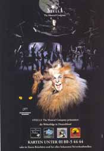
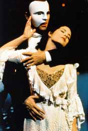
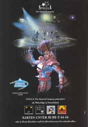
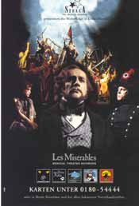
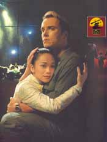
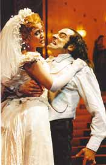
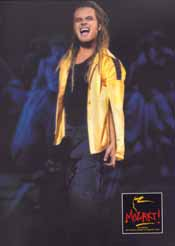
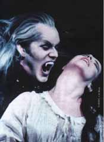

|
|
|
bisher gesehene Musicals:  Cats  Phantom der Oper  Starligth Express  Les Miserable  Miss Saigon  Dr. Jekyll & Mister Hyde  Mozart  Tanz der Vampire |
Die
Musik zielt darauf hin, das Herz mit edlen Gefühlen zu erfüllen.
Ich bin ein ganz großer Musical-Fan. Aber auch für Oper und die leichtere Operette schlägt mein Herz. Die Openair-Veranstaltungen zu den Schweriner Schlossfestspielen sind dabei Usus. Auf diesem Wege konnte ich bisher schon sehen: "Troubadour" (1997); Aida, (1999); Das Schauspiel "Die Musketiere"(2000) "Nabucco" (2001); "Turandot" (2002), "Don Carlos" (2003), "Ein Maskenball" (2004), "Ricoletto" (2005), "La Traviata" (2006), 2007 kommt "Troubadour" Ich liebe Walzer, Tango und nostalgische Evergreens. Besonders mag ich seit unseren zwei Urlaubsbesuchen in Wien das Neujahrskonzert der Wiener Philharmoniker. Dabei besonders den Radetzky-Marsch, der mich sehr intensiv an meinen Opa Hermann Dittmann erinnert. Dieser hatte jahrelang als Tambourmajor beim Spielmannszug der Freiwilligen Feuerwehr Großmonra fungierte. Langsam versuche ich mich auch an die klassische Musik heranzubringen, wie Wagner und Haydn. Wie es sich im Mozartjahr 2006 gehört, versuche ich seinem Leben und seinen Werken nachzuspüren. Das bisherige Wissen konnte fabelhaft in den verschiedensten Mozartausstellungen in Salzburg (Mozarts Geburtshaus, Mozarts Wohnhaus, und die Mozartausstellung des Carolino-Augusteums) sowie in Wien (Wohnhaus Mozarts und im Musikhaus) ergänzt und erweitert werden - es war einfach faszinierend, sehr abwechslungsreich UND: KEINE Ausstellung GLICH DER ANDEREN! Es wurden dort alle bisher zur Verfügung stehenden Medien - vor allem die digitalen - genutzt und Mozart wurde nicht nur nach seinem Mythos, sonderns auch als Mensch mit Fehlern und Schwächen gezeigt - was ihn so sympathisch und "lebendig" machte. Inzwischen habe ich mich auch durch das wunderbare Ballett im Mecklenburgischen Staatstheater mit der Aufführung "Orestie" herangewagt und muss sagen: ICH WAR BEGEISTERT!
Der
eine wollte Mozart hören und der andere Beethoven.
|